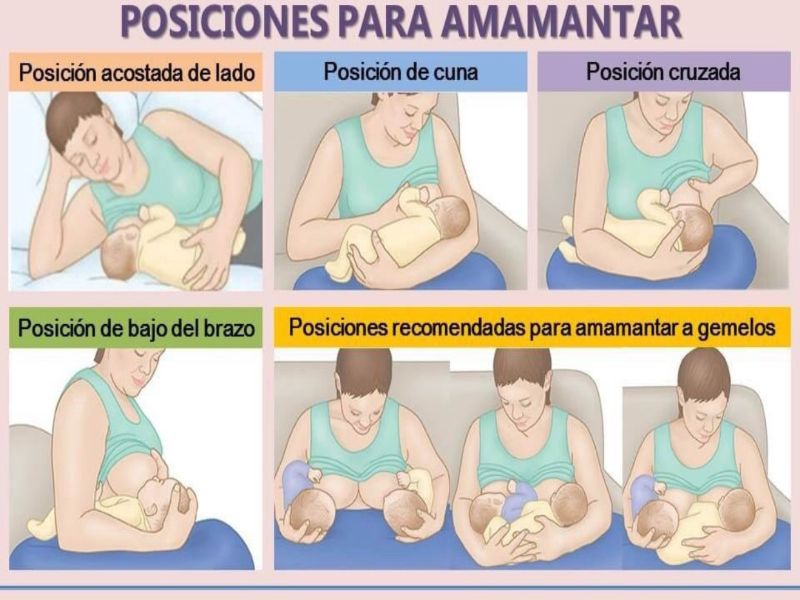

Lactancia: una elección informada
Un vínculo para toda la vida
La lactancia materna es una práctica natural que ofrece beneficios comprobados para la salud del bebé y de la madre. La leche materna contiene todos los nutrientes que el recién nacido necesita en los primeros meses de vida, además de anticuerpos que fortalecen su sistema inmunológico y reducen el riesgo de infecciones, alergias y enfermedades crónicas a futuro. Para la madre, amamantar favorece la recuperación posparto, ayuda a prevenir hemorragias, reduce el riesgo de cáncer de mama y ovario, y contribuye al bienestar emocional gracias a la liberación de oxitocina, la “hormona del vínculo”. Elegir amamantar es una decisión personal e informada. Cada experiencia es única, y contar con apoyo profesional y emocional puede marcar la diferencia. La lactancia no solo nutre el cuerpo, sino también el lazo afectivo que se forma desde los primeros momentos de vida, creando un vínculo que perdura para siempre.
¿Es compatible con la lactancia?
Es muy común que las madres primerizas tengan dudas sobre si pueden seguir amamantando al tomar ciertos medicamentos, someterse a estudios médicos o enfrentar enfermedades leves. Muchas veces, por miedo o falta de información clara, se interrumpe la lactancia innecesariamente. La realidad es que la mayoría de los tratamientos son compatibles con la lactancia, y existen recursos confiables para verificarlo. Si tenés dudas sobre un medicamento, no dejes de consultar con tu profesional de salud, pero también podés acceder a fuentes oficiales que te orienten con información actualizada y basada en evidencia.
Consultá la base de datos oficial en España: e-lactancia.org
Posiciones para amamantar
Conocer distintas posiciones para amamantar es fundamental para que cada madre pueda elegir la que mejor se adapte a ella y a su bebé. No existe una única forma correcta: si la lactancia va bien y ambos están cómodos, no es necesario cambiar. Cambiar de posición puede ser útil para vaciar mejor el pecho y prevenir problemas como dolor, grietas, mastitis o conductos obstruidos. Entre las posiciones más comunes está la clásica, en la que la madre está sentada y sostiene al bebé frente a su cuerpo; la de caballito, donde el bebé se sienta sobre la pierna de la madre; la reversa, que permite cambiar de pecho sin mover al bebé; o la posición en canasto, recomendada para madres con cesárea o para amamantar gemelos. También existen opciones acostadas, como el decúbito lateral, muy útil para descansar o dar el pecho durante la noche, y la posición con la madre recostada boca arriba y el bebé sobre su cuerpo, recomendada cuando el flujo de leche es muy fuerte. Lo más importante es que madre e hijo estén relajados y confortables para que la lactancia sea una experiencia positiva para ambos.
